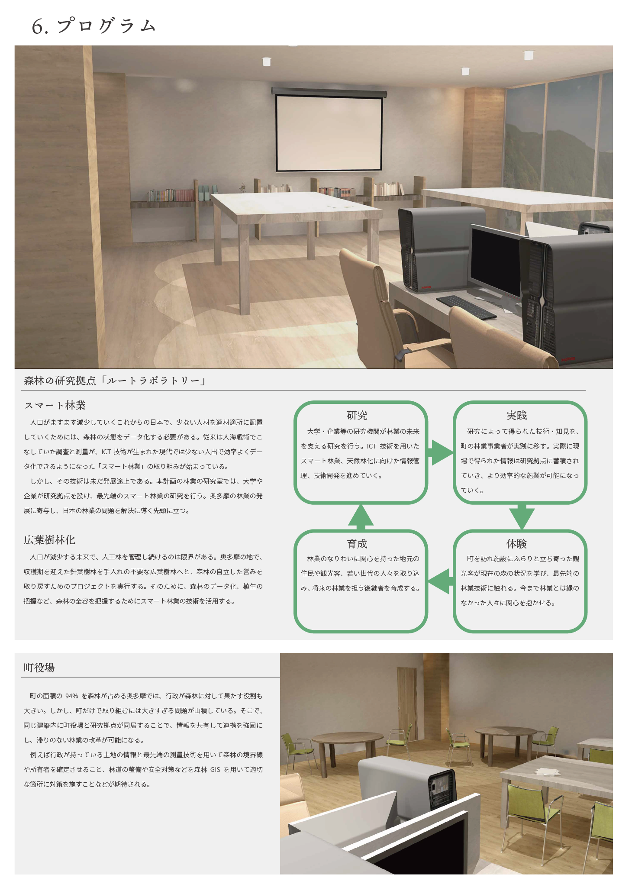
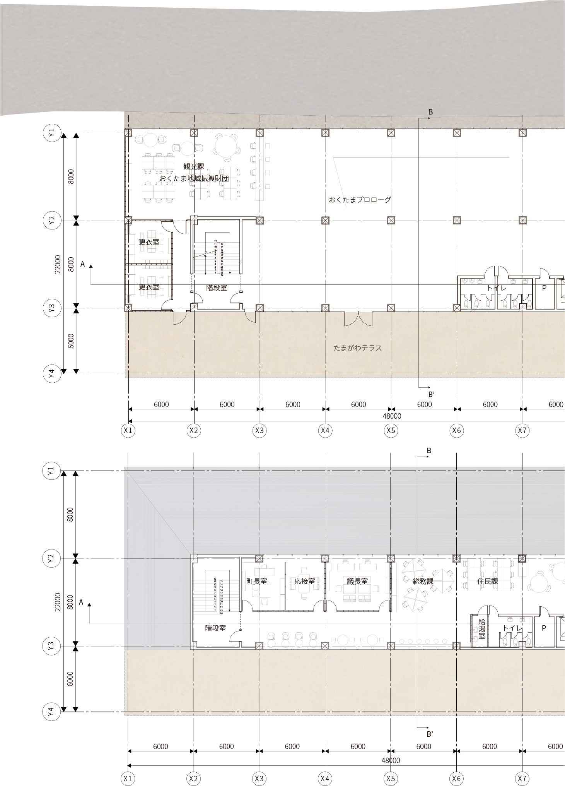

卒業設計「root to leaf」
大学卒業の権利を賭けて3人1組で取り組んだ建築設計課題。建物の敷地や規模、機能などはすべて自由ですが、その設計によってどのように社会課題に向き合うことができるのか、ということが求められます。
私たちは、東京の山奥「奥多摩」において、木材や森林との関わり方、林業の未来を考える複合施設を考案しました。駅前という好立地の町役場で、森林の保全に対して多くの役割を担っている行政と、一般市民と地域の住民や観光客の接点となる場所を想定しました。
私は主に全体の作業のマネジメントや建物のコンセプトの考案、プレゼンボードの作成を担当しました。最終的な成果物はB2用紙26枚、全長は13mにも及びます。
私たちは、東京の山奥「奥多摩」において、木材や森林との関わり方、林業の未来を考える複合施設を考案しました。駅前という好立地の町役場で、森林の保全に対して多くの役割を担っている行政と、一般市民と地域の住民や観光客の接点となる場所を想定しました。
私は主に全体の作業のマネジメントや建物のコンセプトの考案、プレゼンボードの作成を担当しました。最終的な成果物はB2用紙26枚、全長は13mにも及びます。
アウトライン
最終成果物



